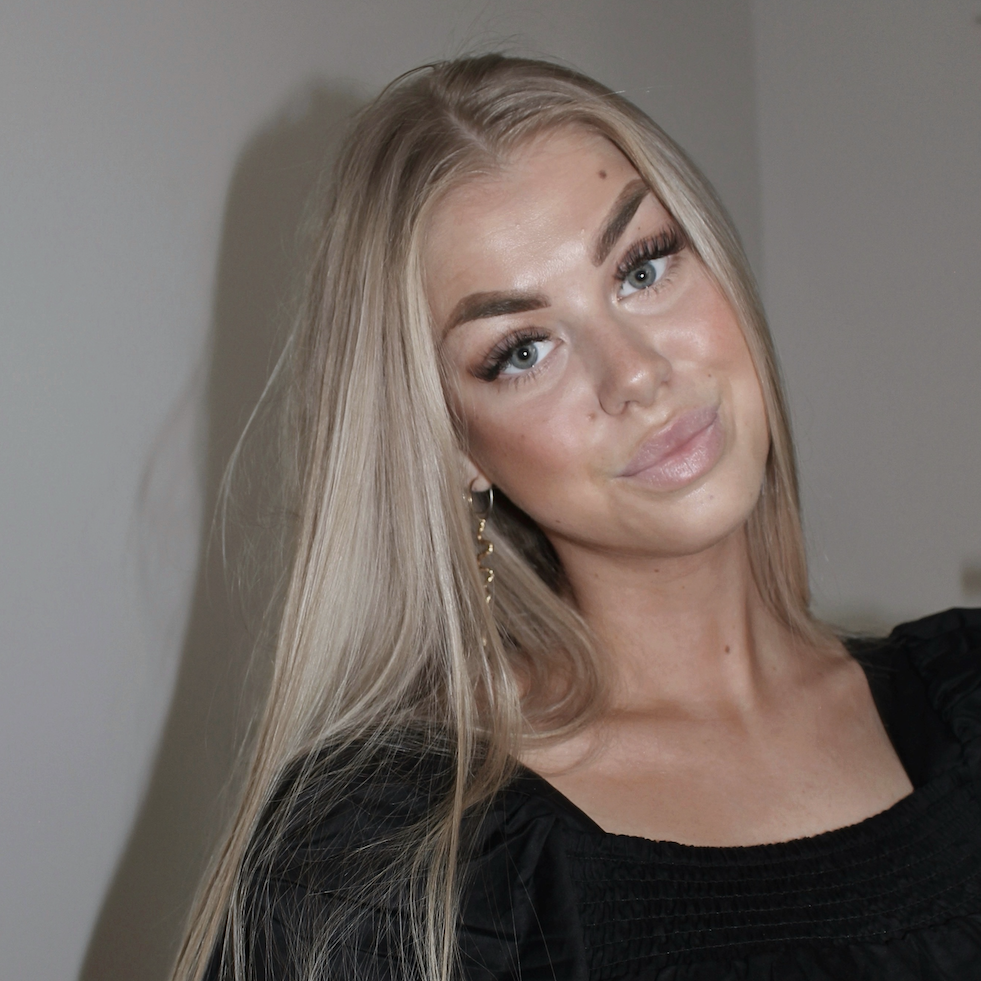

Hvem er jeg?
Som person er jeg smilende, udadvendt og én der oser af gå på mod. Jeg har en masse digitale drømme og kreative idéer, og er altid klar på at dygtiggøre mig og klar på personlig udvikling.
Som studerende på Multimediedesign på Københavns Erhvervsakademi har jeg fået en passion for arbejdet med udvikling og implementering af digitalt design og digitale brugeroplevelse.
Personligt arbejder jeg meget detaljeorienteriet og struktureret. Jeg fungerer både selvstændigt og i et team. På KEA har vi, gennem gruppearbejde, arbejdet ud fra SCRUM frameworket.
Jeg har erfaring med:
Se CV
+
CV | Caroline Højberg Jensen
Profil
Detaljer:
Pladehals Allé 14, 5. TV.
2450, København SV
caroline19jensen@gmail.com
+45 42 72 20 03
Fødselsdato:
19 / 07 - 2000
Nationalitet:
Dansk
Sprog:
Dansk
Engelsk
Kompetencer:
Struktureret
Resultatorienteret
Detaljeorienteriet
Passioneret
Ambitiøs
Ansættelseshistorik
Customer Service Consultant ved Xplora Technologies, København S
Oktober 22 - Nuværende
Assistance / Salgselev / Salgsassistent ved Trapholt Kunstmuseum, Trapholt Designbutik, Kolding
Januar 2020 - August 2022
Lagermedarbejder ved DSV Prime Cargo, Kolding
December 2019 - Januar 2020
Lagermedarbejder ved Lemvigh Müller, Kolding
Januar 2019 - Oktober 2019
Butiksassistent ved MESSAGE, Kolding
April 2017 - Juni 2018
Servicemedarbejder ved Salling Group, Bilka, Kolding
Juli 2016 - April 2017
Uddannelse
Multimediedesigner, KEA, Københavns Erhvervsakademi, København N
August 2022 - Nuværende
Salgsassistent, IBC Innovationsfabrikken, Kolding
September 2020 - Februar 2022
Studentereksamen, IBC International Business College, Kolding
August 2016 - Juni 2019